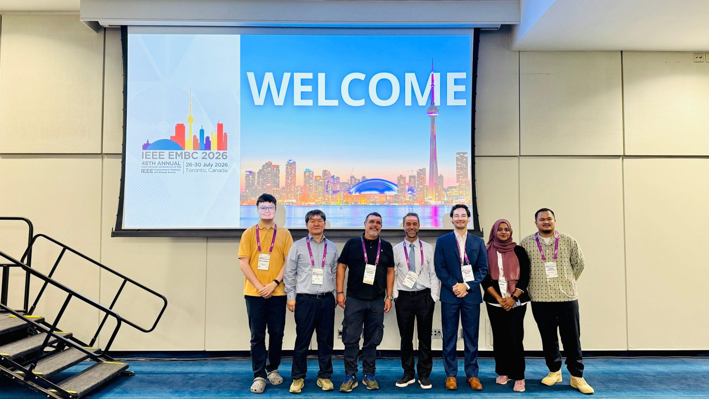
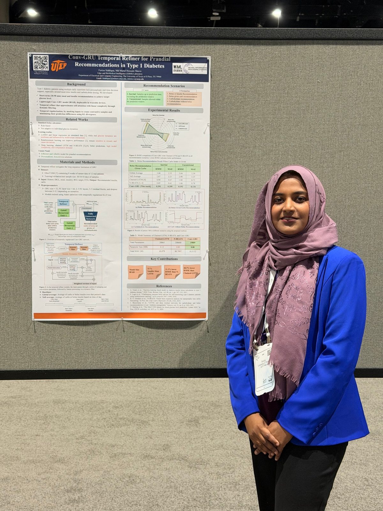
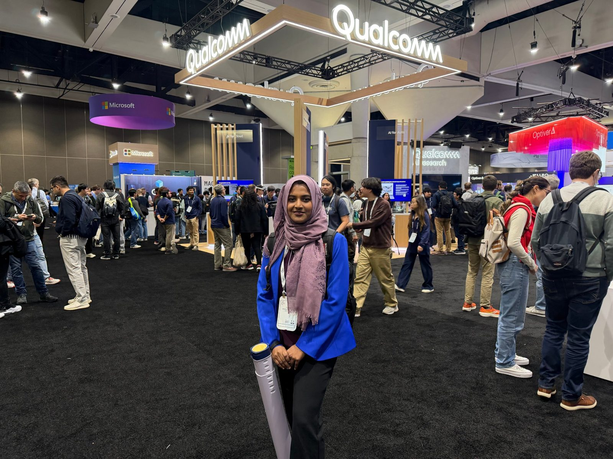
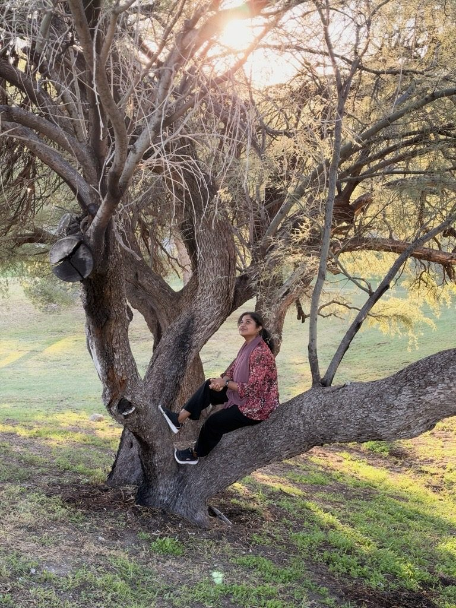

Misc
Photos from conferences and life, plus things from before my Ph.D. Things from before my Ph.D. — undergraduate competitions and projects, teaching, clubs, and a few photos.mdash; undergraduate competitions, projects, teaching and clubs.
Photos & Moments




Undergraduate Competitions
Nov 2021
Finalist, BIKIRON — Sustainable and Renewable Energy Development Authority, Bangladesh · Project
Mar 2021
Champion, Project Tech Tussle — IEEE Computer Society BRACU · Meena pregnancy-tracking app
Mar 2021
1st Runner Up, BdOSN DevMania Project Competition · Meena pregnancy-tracking app
Undergraduate Projects
Continuous heart-rate & BP monitor from PCG · MATLAB
- Built a hardware prototype and a heart-sound dataset
- Signal processing to estimate heart rate and blood pressure
CNN-based detection · MATLAB
- Built a dataset and implemented YOLOv2 for detection
GSM telemetry · Arduino IDE, ThingSpeak
- Self-powered sensing node reporting over GSM
NodeMCU + 4-channel relays · Arduino IDE, Blynk API
- Control AC appliances from a phone
Teaching, Clubs & Exposure
2022/12 – 2023/05
Volunteer, Research and Innovation Center for Science and Engineering (RISE), BUET
2022/11
Industrial tour, Bangabandhu Satellite Base Station
2021/11 – 2023/05
Organizing Secretary, BUET Brain Teaser Club
2020/09 – 2021/02
Instructor, 10 Minute School (EdTech) — published 60 video lectures
Skills & Coursework
- Languages
- C++, Python, Verilog
- Deep learning
- PyTorch
- EDA & hardware
- Vivado, Vitis, Synopsys, Cadence Virtuoso, Xilinx FPGA
- Other
- AutoCAD, MS Excel
Graduate
- Introduction to VLSI
- Security in Cyber-Physical Systems
- Computer Architecture I
- Hardware for Neural Networks
- Efficient Deep Learning Acceleration
- Foundations of Deep Learning
- Biomedical Instrumentation & Measurement
- Wireless Communications
- Continuous Signals & Linear Systems
- Digital Electronics · Control Systems I